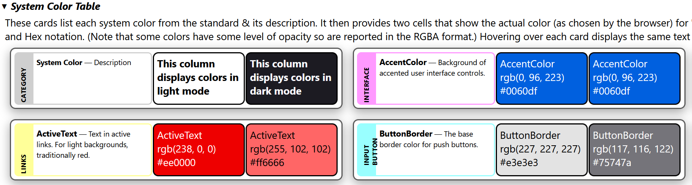

Introduction
CSS System Colors Visual Demonstration
CSS System Colors are derived from the user's operating system's color scheme. They are useful for creating a consistent look and feel that matches the user's preferences.
This page provides a nice visual reference to the system-colors - but the displayed colors are specific to this browser/operating System!

Avoid specifying different colors for (light or dark mode)[https://developer.mozilla.org/en-US/docs/Web/CSS/color_value/light-dark]: let the browser & OS handle it for you!
This page demonstrates the CSS System Colors in action.
Options

- Color Scheme: The first option is a dropdown that sets the page's color scheme from OS System default (auto), to explicitly light, or explicitly to dark color mode. Note that form demonstration purposes many of the panels explicitly set color mode to make the effect obvious.
- Sort by Category: By default the system colors are displayed alphabetically. When clicked they are sorted by a category that I arbitrarily assigned based on their description.
- Contrast: You can change the contrast for the page using the slider.
- User Agent: The browser's reported configuration (from navigator.userAgent) is displayed here, for the record.
- Both the "System Color Grid" and "Deprecated System Color Grid" panels have a "Download JSON" button at the bottom. This will download a JSON file with the system colors and their description. Uniquely, we add the UserAgent as reported by the browser/Operating system. We also then note the colors (as RGB/RGBA & Hex) that were actually displayed -- both in light and dark color modes!
Functionality
The web page delivers a handful of panels:
- Introduction: This ideally is synchronized to contain the same information you are reading now.
-
System Color Table: This displays one 'card' for each of the 16 System Colors, plus an initial one that serves as a legend. Each card displays the category I assigned each color, followed by the color name and description.
Then there are two sections that show that color as displayed by the browser in the background. The first blob of color is with the color-scheme explicitly set to 'light'. The second is the same, but with the color-scheme set to 'dark'.
The actual color used for the backgrounds is then displayed in RGA and hex notation. (On a few colors the colors have some level of opacity so are reported in the RGBA format.) 
-
System Color Grid: This is fairly similar to the table but groups the colors into light and dark mode panels. The colors and values in these 'grids' should match those in the 'tables', it just is a different presentation. Note that there is a "Download JSON" button as described above under Options.

-
Deprecated System Color Table: as above, but displays the deprecated colors for anyone's interest.
- Deprecated System Color Grid: as above, but displays the deprecated colors for anyone's interest.
- Demo Page: - UNFINISHED, but the goal is to have a simple HTML page that shows all the System Colors in use as intended - shown in light & dark mode of course.
You can view the colors and change the light/dark mode and contrast settings to see how the colors adapt to different environments.
We uniquely display the actual color's RGBA values for the current environment. Note that the values are likely to change when switching from light to dark mode.
Hovering over each card displays the same text as in the card,and allows copying it to your clipboard if desired.
System Colors Introduction
CSS System Colors are a set of 17 color keywords that are derived from the user's operating system's color scheme. They are useful for creating a consistent look and feel that matches the user's preferences.
Note: System colors' actual RGBA values may vary depending on the user's operating system and browser settings!
There are also a few other new "system" things out now: System Fonts, font weights, icons which provides a neat new way to re-envision who does what. A complete system.css can provide a quick start!
History
- CSS System Colors are not new but were originally part of CSS2.
- With
 CSS
Color Module Level 3 they
were all listed as depreciated. (Apparently they enabled mimicking system
colors too well, and could be used for fake, evil
phishing sites. Just don't go
there!)
CSS
Color Module Level 3 they
were all listed as depreciated. (Apparently they enabled mimicking system
colors too well, and could be used for fake, evil
phishing sites. Just don't go
there!)
- The color-scheme keyword was adopted around 2022.
- Color Module Level 4, revived the following colors: ButtonFace, ButtonText, GrayText, Highlight & HighlightText. It also added a number of other as seen in the link above. Deprecated colors were put into an appendix.
- Color Module 5 adds @color-profiles, color-mix(), light-dark() & contrast-color() functions & teases of future enhancements. System-colors remain as defined by Color Module 4.
Current system colors are defined in the CSS Color Module Level 4 specification and can be used in any property that accepts a color value. (Somewhere I've read they were supposed to be prefixed with the system- keyword, such as system-highlight or system-buttonface, but this only leads to errors for me.)
The colors are designed to adapt to different light/dark modes and contrast settings, making them ideal for creating (accessible)[https://whimsica11y.net/] and user-friendly (interfaces)[https://projects.dutchcelt.com/system.css/]. They can be used in combination with other color values to create a harmonious (color palette)[https://codepen.io/sarajw/pen/eYwLaYp].
For more information on CSS System Colors, check out:
- CSS Tricks article: https://css-tricks.com/come-to-the-light-dark-side/
- (Sara Joy)[https://sarajoy.dev/blog/color-scheme/]
- (System.css)[https://projects.dutchcelt.com/system.css/]
- (Thomas Steiner)[https://web.dev/articles/color-scheme]
- (Jim Nielsen's blog post)[https://blog.jim-nielsen.com/2021/css-system-colors/]
- (MDN Web Docs)[https://developer.mozilla.org/en-US/docs/Web/CSS/system-color]
Caveats
- "System Colors can theoretically can expose details of the user’s OS settings, which is a fingerprinting risk." 1
- "The system colors, if they actually correspond to the user’s system colors, pose a security risk, as they make it easier for a malware site to create user interfaces that appear to be from the system. However, as several system colors are now defined to be "generic", this risk is believed to be mitigated." 2
License
©2024 eoc.online under the permissive MIT License. Please note our contributions though!
https://eoc.online: Open source tooling for Emergency Operation Centers
Source & details at https://github.com/eoconline/css-system-colors
System Color Table
System Colors Grid
Current System Colors: Light Color Mode
Current System Colors: Dark Color Mode
Deprecated System Color Table
Deprecated System Color Grid
You may - or may not - see a color as these are deprecated and should not be used. The browser decides what to do with these values. They are included here for reference purposes only.
Deprecated System Colors: Light Color Mode
Deprecated System Colors: Dark Color Mode
System Color Example
Demo Page: Color Mode
>NOTE: This page is more a vision than anything useful. I do plan to show a useful page that demonstrates how to use these in a real situation. Suggestions welcome!
see https://codepen.io/sarajw/pen/xxzyOMZ & https://css-tricks.com/come-to-the-light-dark-side/ for a starting point...
This is a page demonstrating the use of
CSS
System Colors in a real-world scenario. The text color is set to system-canvasText and the
background color is set to
system-canvas.
Note that if you change the Light/Dark mode above, the colors automatically adjust - without the author having to specify any adjustments! Easy Peasy.
generate a sample html page showing all the css system colors in action TODO: Organize this page by categories. - This uses the ButtonText, ButtonFace & ButtonBorder colors. Hover to see ___ color, then Click for the ActiveText color!system-canvasText and the background color is set to
system-canvas.
Note that if you change the Light/Dark mode above, the colors automatically adjust - without the author having to specify any adjustments! Easy Peasy.
Weird it is that clicking the paragraph changes its color to ActiveText. This is a bug in the code that I can't seem to find. It is not supposed to do that. But it does. So there.
system-link and the visited link color is set to system-visited.
system-link and the
visited link color is set to system-visited.
This is a blockquote. The text color is set tosystem-quotetextand the background color is set tosystem-quote:
This is a code block. The text color is set to system-canvasText and the background color is set to system-canvas.
input here!
This is a paragraph.